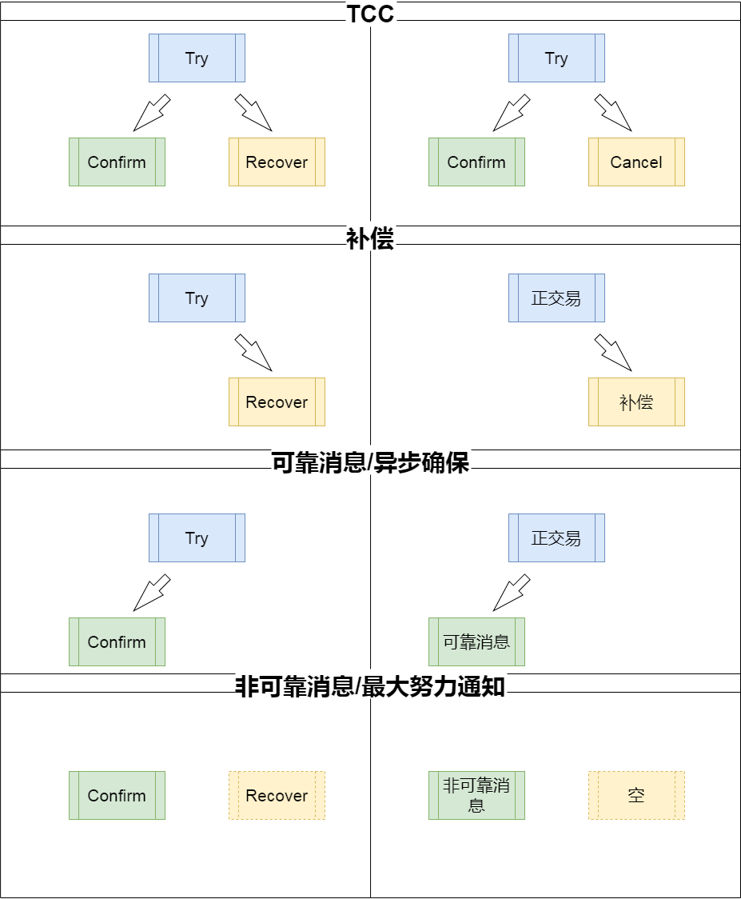

两年前从微服务转型到区块链，欠下一篇当时对二阶段事务顿悟的文章，今天填坑。
缘起
2016年转型做微服务，当时在我至今唯一承认的一位真正意义上的工作上的导师带领下，首先接触研究的是两阶段事务，或称为柔性事务，当时他起了个名字：TCR（Try、Confirm、Recover）。研究的材料主要基于阿里2008年和2010年的PPT，里面介绍了4种类型：TCC（Try Confirm Cancel），补偿型，可靠消息型，非可靠消息型。
2020年转型做区块链，也就是直到那一刻，才突然想透了这4种类型的关系，特别是后面两种，可靠消息型、非可靠消息型，一直被忽视了。
Try Confirm Recover
分布式事务一致性4种交易类型，一句话概括：一个交易，两个阶段T/CR，三种操作T（ry）、C（onfirm）、R（ecover），四种组合TCR（TCC）、TR（补偿）、TC（可靠消息）、C(R)（非可靠消息）。

TCR
TCC型，就是包含三个操作的TCR型，网上的资料较多，而且这个一直是重点讨论的对象，本文暂时先不展开，关键在于：
- T阶段是锁资源
- C、R阶段要支持幂等
TR
补偿型，就是只包含两个操作的TR型，T负责正交易，R负责反交易或冲正，这种模式网上的资料也有不少，而且比较容易理解，本文暂时也先不展开，关键在于：
- 高并发会导致R阶段失败的可能性不能被忽略
- R阶段要支持幂等
TC
可靠消息/异步确保型，就是只包含两个操作的TC型。这个是较少讨论的，这里重点展开介绍一下。
首先不要被这里的“消息”一词迷惑，以为一定要用什么消息中间件，也不要被具体的实现方案迷惑，其核心我认为就是TC型，至于怎么做到都可以。
最简单容易理解的方案，就是T阶段在数据库中记下一条记录，与T阶段要更新的其它数据一起commit，保证一致性。而在C阶段，则根据之前的这条记录完成剩余的动作。
按着这个方案，回到上面的几个名词，分别解释一下：
可靠：为了实现可靠，也就是保证C阶段一定能完成，可以通过异步进程去定期扫描数据库，把未成功处理的内容重新发起，因此这里C阶段也要支持幂等。
消息：一般这种模式叫做消息，用于通知下一个模块处理，用消息中间件之类的也比较常见，但绝对不要因此被迷惑了
异步：通知消息是异步的一种常见方式，上面说的异步进程去定期扫描数据库，也是必须要有的一个异步手段
确保：与可靠一个含义
C(R)
非可靠消息/最大努力通知型，就是只包含两个操作的C(R)型。这个也是较少讨论的，这里重点展开介绍一下。
其实更确切的说，C(R)型只包含一个操作C，因为前面没有Try，因此也就不可能需要Recover。既然只有一个操作Confirm，那跟只有Try的差别就是，只有Try就是普通的一阶段交易了，这里说的是两阶段，所以必须是第二阶段的Confirm，因此这个服务通常是被别人调用，并且在别人一阶段处理的时候，这个服务什么都不做，直到第二阶段才处理。
按着这个思路，回到上面的几个名词，分别解释一下：
非可靠：与可靠相呼应，因为没有Try阶段的记表，所以C阶段的处理失败了是没有异步进程去重试的，所以不可靠。
消息：这里更加不可能涉及什么消息中间件，只能理解为一阶段的时候被调用了，被一个消息通知了。也有解释说这通常是发了一个短信之类的消息的操作，这种解释应该是误解了，现象可能是这样，但是原理绝对不能这么解释。
最大努力：与非可靠意思一样，就是说通过最大努力的尝试，但是不一定可靠。这里甚至都没有重试的基础，因为在一阶段没有记表。
通知：与消息一个含义。千万也不要曲解了，以为这是尽最大努力（比如重试n次）去发送一个通知消息（比如短信）之类的意思。